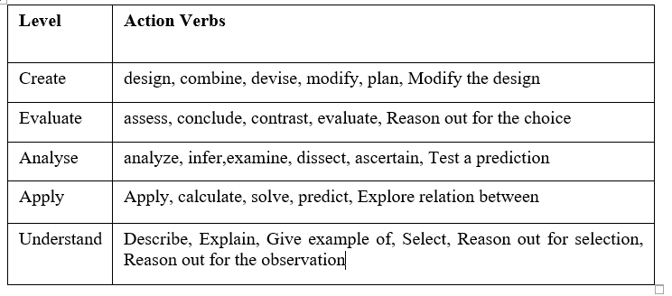
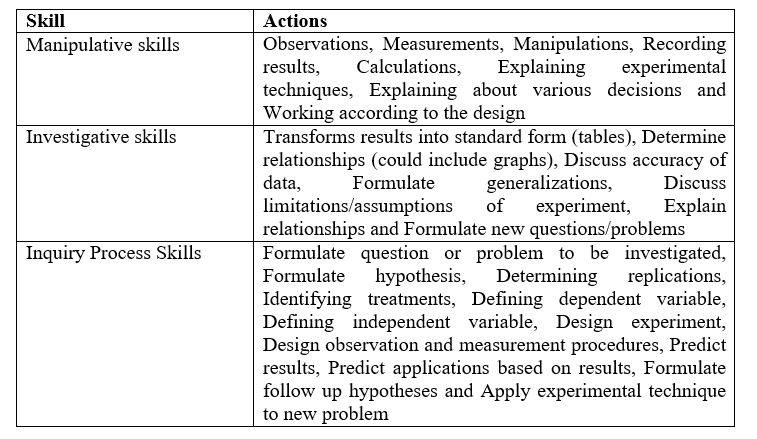
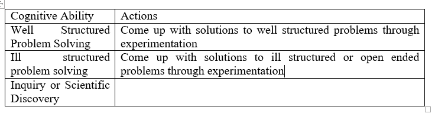
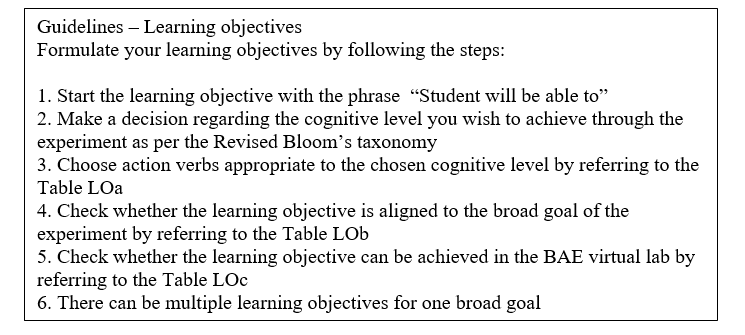
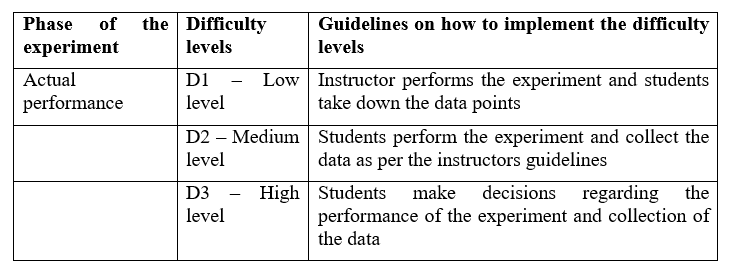

STEP 1: BROAD GOAL
Click on one of the subtopics in the outline to read more.
Introduction
In the first step you need to make a decision regarding the broad goal of the experiment. As you can see from the figure below the goal of the experiment may be one or more of the four dimensions. This is the most important step, as all the further steps will depend on what you wish to achieve from the experiment.
Taxonomy
A taxonomy is used to classify things. The Revised Bloom’s taxonomy of educational objectives defines levels of objectives in three domains:
- Cognitive (knowledge based)
- Affective (emotive based)
- Psychomotor (action based)
- Knowledge
-
Skill
This is the ability to do something well and also termed as expertise. The various skills that can be developed in the laboratory environment are practical skills, manipulative skills, investigative, inquiry process skills etc. The design of the experiment will depend on the type of skill you wish to achieve. Through this tool we will be providing you with guidelines on how to design the experiment for the above four skills.
-
Cognitive Ability
This is the ability of an individual to perform the various mental activities most closely associated with learning and problem solving. Through this tool we will provide guidelines for the cognitive abilities of Analysis, Problem Solving, Application and Inquiry.
-
Attitude
This is predisposition or a tendency to respond positively or negatively towards a certain idea, object, person, or situation. Attitude influences an individual's choice of action, and responses to challenges, incentives, and rewards. This is related to the affective domain and we will be providing guidelines only on the affective component of team work in this tool.
The knowledge dimension has four components that are Facts, Concepts, Principles and Procedures.
What is a fact?
It is logically associated pieces of information. Some examples are names, dates, and events. For the Basic and Advanced Electronics laboratory environment the examples of facts are components, equipment etc.
What is a concept?
A concept is defined by a set of shared features found in each example of the concept. That is, every example of a concept shares certain ‘must have’ features with all other examples of the concept. In addition to these ‘must have’ features, the examples can have other features, which other examples of the concept may or may not have. The can have features describe the many ways examples of a concept can be different. For the Basic and Advanced Electronics laboratory environment the examples of concepts are PN Junction diode, Transistor etc.
What is a principle?
A principle is basically either cause-and-effect or relationships. It explains or predicts why something happens in a particular way. For the Basic and Advanced Electronics laboratory environment the examples of principles are Ohms law, Barkhausen criterion for oscillation etc.
What is a procedure?
It is a set of ordered steps, sequenced to solve a problem or accomplish a goal. For the Basic and Advanced Electronics laboratory environment the examples of procedures are - A sequence of steps carried out to perform an experiment, A sequence of steps carried out to analyse a circuit etc.
The knowledge dimension has four components – facts, concepts, principle and procedures. For each of these components there are six levels depending on the difficulty of the learning. These levels as per the Revised Blooms taxonomy are Remember, Understand, Apply, Analyze, Evaluate and Create. The experiment design will vary depending on what target level you decide to achieve.
How to select the broad goal?
For the Basic and Advanced Electronics virtual laboratory experiments we provide guidelines for the following Broad Goals and so you may select one or more of the broad goals depending on what you wish to achieve from the experiment
-
Knowledge
- A1. Learning concepts and principles.
- A2. Learn how to integrate, construct and apply knowledge and experience.
- A3. Learn how to use laboratory equipment, apparatus and instruments, carry out observations, measurements, constructing experimental set up, ordering and organizing experimental work and other standard procedures by using the sensory awareness.
-
Skills
- B1. Develop basic laboratory skills such as practical skills, investigations skills, manipulative skills and psychomotor skills.
-
Cognitive abilities
- C1. Learn how to carry out data visualization, organization, processing and analysis, to arrive at conclusions based on results of data analysis.
- C2. Learn how to carry out modeling.
- C3. Learn how to plan an investigation and design experiments to solve a problem
-
Attitudes
- D1. Develop affective outcomes such as maturity, responsibility, working in teams, safety and ethics.
- D2. Develop the skill of communicating the results of the experiment in a suitable format and also communicating and interacting with peers.
Example from Basic and Advanced Electronics Virtual laboratory
- Topic: PN Junction Diode
- Content type procedure – Procedure to Bias the PN Junction diode in forward Bias condition
- Select the broad goals Instrumentation for this sub topic.
- They will learn how to construct the experimental set up (construct the circuit), how to use laboratory equipment such as DC Regulated Power Supply, Voltmeter and Ammeter and components such as PN Junction diode and resistor.
Guidelines for selecting the broad goal
Now it is time for you to decide the Broad Goal for the experiment you are designing for your topic.
- Select the topic from your course for which you wish to design virtual laboratory experiment
- Identify the knowledge components such as concepts, principles, procedures of the topic.
- Identify the skills you wish to develop
- Identify the cognitive ability you wish to develop
- Select the ones you wish to target through the experiment
You can select one or more Broad Goals from the Table below
DESIGN
STEP 2: LEARNING OBJECTIVES
Click on one of the subtopics in the outline to read more.
Introduction
The second step in the experiment design process is the formulation of learning objectives aligned to the Broad goal of the experiment.
- The learning objectives should identify a learning outcome - The objective needs to state what the learner is to perform, not how the learner learns. For example, “The learner will recite the five steps in Maslow's Hierarchy of Needs.” Evidence of whether the learners have learned the material lies not in watching them read about it but by listening to them explain the principles in their own words.
- The learning objectives should be precise — It's sometimes difficult to strike a balance between too much and too little precision in an objective. There is a fine line between choosing objectives that reflect an important and meaningful outcome of instruction, objectives that trivialize information into isolated facts, and objectives that are extremely vague. Remember, the purpose of an objective is to give different people the same understanding of the desired instructional outcome.
How to formulate Learning Objectives?
As per the definition of learning objectives they need to be very specific and measurable hence you should not use verbs such as understand, visualize etc instead use action verbs such as identify, list,describe,solve etc. Similarly the learning objective should be concerned with the learner and not the teacher hence avoid using verbs such as teach,show,demonstrate etc.
Examples of valid and clearly defined learning objectives for the course Basic Electronics- Student should be able to analyse the BJT amplifier circuits
- Student should be able to describe the effect of the value of β on the output of the amplifier
Table LOa - Cognitive level and action verbs - Broad Goal Develop students Knowledge
Broad Goal – Develop Skills
Broad Goal – Cognitive Abilities
How to formulate learning objectives at different cognitive levels as per Revised Blooms’ Taxonomy?

Example from Basic and Advanced Electronics
- Broad goal: Instrumentation
Learning objectives:
- Student should be able to construct the circuit of the PN Junction diode in Forward biased condition
- Student should be able to select the correct components
- Student should be able to select the suitable equipment
- Student should be able to carry out observations by using the equipment.
DESIGN
OUTLINE
3.1 Introduction
3.2.1 Conception, planning and design of experiment
3.2.1 Example
3.2.1 Modification for Example
Guidelines for First Phase Design
Add the first phase of the experiment
3.2.2 Execution of experiment
3.2.2 Example
3.2.2 Modification for Example
Add the second phase
3.2.3 Analysis and interpretation
3.2.3 Example
3.2.3 Modification for Example
Design the third phase of the experiment
3.3 Phase 4: Applications
Example from BAE laboratory
Add phase 4: Applications
More information about the Expository Instructional Strategy
Example
STEP 3:INSTRUCTIONAL STRATEGY
The third step in the experiment design process is the selection of Instructional Strategy depending on the learning objectives you wish to achieve. You may design more than one experiment for one topic based on the target objectives
with different instructional strategies.
Important Tip:
You may even design one experiment per learning objective with each one with a different instructional strategy. The students too can perform multiple experiments on a single topic as the time required to perform a virtual laboratory experiment is very less compared to the traditional laboratory. Also another advantage of the virtual laboratory is that it is available to the students online anytime anywhere.
Instruction is a combination of teaching and learning activities. The instructional Strategies determine the approach a teacher may take to achieve learning objectives. We provide guidelines for designing experiments based on the
following four instructional strategies.
We provide guidelines so that the experiment designs become more effective and you can achieve your learning objectives. As part of the design you will be designing tasks or activities that the students need to carry out as part
of the experiment.
- Expository
- Scientific Discovery
- Well Structured Problem Solving
- Problem-based
Refer to the following table in order to make a decision regarding the selection of the Instructional Strategy depending on the broad goal of your experiment.
Introduction
This is one of the most widely used instructional strategies in science and engineering laboratories since decades. Though it has some advantages it has been criticized to have a cookbook nature and as placing very little emphasis on thinking, being an ineffective means of conceptual change. The experiment design with this strategy can be made more effective by slight modifications in the various tasks and designing the experiment at different difficulty levels.
The four important phases in the design process are
- Conception, planning and design of experiment
- Execution of experiment
- Analysis and interpretation
- Applications
Conception, planning and design of Experiment
In this phase you will be carrying out the following activities
- Formulate question or problem to be investigated.
- Decide the broad goal of the experiment
- Formulate learning objectives
- Determine replications
- Identify treatments/ Suggesting technical procedures
- Technical preparation of the experiment (assembling tools, preparing solutions, constructing circuits etc.)
- Define dependent variable
- Define independent variable
- Design experiment
- Design observation and measurement procedures
- Predict results
Example
The example from BAE course is given below
This example is of a pure Expository Instructional Strategy in which you specify each and every step. But this is not effective hence you need to modify certain steps to incorporate constructivist approach and increase the difficulty level of the experiment.
Modification for Example
The following modifications will increase the difficulty level of the experiment.

The BAE example is at Low difficulty level. Modifying the problem as given below can increase the difficulty level of the BAE example experiment:
A2 – Medium level – What are the diode specifications on which the V-I Characteristics depend on?
A3 – High level - Of the given two diodes which one is more suitable for the purpose of rectification?
Guidelines for First Phase Design
The following guidelines specify how a constructivist approach can be incorporated in the same experiment in the first phase design.
Guideline 1: Have the students identify the relevant variables. Students can be asked to identify controlled and uncontrolled variables.
Guideline 2: Have the students design the procedure or reduce the procedure to the essential parts. If the procedure cannot be designed safely, then the students might be asked to explain why certain steps in the procedure are done
in a certain way.
Add the first phase of the experiment
- Formulate question or problem to be investigated.
- Decide the broad goal of the experiment
- Formulate learning objectives
- Determine replications
- Identify treatments/ Suggesting technical procedures
- Technical preparation of the experiment (assembling tools, preparingsolutions, constructing circuits etc.)
- Define dependent variable
- Define independent variable
- Design experiment
- Design observation and measurement procedures
- Predict results
Execution of experiment
During this phase the following activities need to be carried out.
- Specify Observations to be taken or data to be gathered
- Specify the Measurements to be carried out
- Describe the Manipulations possible
- Specify the various Calculations to be carried out
Example
The example from BAE course and topic PN Junction diode is given below
This example is of a pure Expository Instructional Strategy in which you specify each and every step. But this is not effective hence you need to modify certain steps to incorporate constructivist approach and increase the difficulty level of the experiment.
Modification for Example
The following modifications will increase the difficulty level of the experiment.

In the BAE example experiment the difficulty level can be increased by the following modifications
Carry out the following modifications to achieve higher cognitive level learning objectives.
Guideline – LO at analyze and evaluate levels
Specify Observations to be taken or data to be gathered
Specify the measurements to be carried out
Describe the manipulations possible
Specify the various calculations to be carried out
These are the steps in which the students may be asked to carry out multiple observations, measurements and calculations. These steps are also most suitable for developing the investigative, manipulative and analysis skills.
BAE example – PN junction diode
Ask the students to plot the graph of V-I characteristics for different diode specifications. Ask the students to adjust one specification for example the internal resistance of the diode Rs to different values and plot the V-I characteristics. Make the students analyse the change in the nature of the graph for the different values. This can be repeated for each of the specification on which the nature of the graph depends. These tasks are helpful in developing the higher level learning objectives of analysis and evaluation.
Guideline – LO at create level
To achieve the learning objective at create level the students may be asked to design their own observations, measurements and calculations.
Add the second phase
- Specify or make students specify Observations to be taken or data to be gathered
- Specify or make students specify the measurements to be carried out
- Describe the manipulations possible
- Specify or make students specify the various calculations to be carried out
Analysis and interpretation
During this phase the following activities need to be carried out.
- Transform results into standard form (tables).
- Determine relationships (could include graphs)
- Discuss accuracy of data.
- Report about procedures and results
- Interpretation of results
You can design these activities and make the student carry out various tasks depending on the target knowledge and skills and the difficulty level of the experiment you wish to set. In order to assess whether the students are carrying out the tasks/activities various assessment questions may be asked or prompts may be designed to provide opportunities for students to reflect on the results of the tasks/activities.
Example
The example from BAE course and topic PN Junction diode is given below
This example is of a pure Expository Instructional Strategy in which you specify each and every step. But this is not effective hence you need to modify certain steps to incorporate constructivist approach and increase the difficulty level of the experiment.
Modification for Example
The following modifications will increase the difficulty level of the experiment.
In the BAE example experiment the difficulty level can be increased by the following modifications

The following modifications will incorporate the constructivist approach in the experiment design
Guideline 4: Use a standard lab design worksheet. Have a standard format that uses the important concepts in experimental design (problem statement, hypothesis, variables, constants, data tables, summary, and conclusions).
Guideline 5: Have students suggest sources of error in the lab and modifications to eliminate these sources of error, and raise questions about the lab. Comparisons of data between groups in class and between classes may raise
questions about sources of variation. Students can produce questions by substituting, eliminating, or increasing or decreasing a variable.
Guideline 7: Have students make predictions and explain them before the lab. Having students make predictions creates interest in the outcome. In addition, have students explain the basis for their predictions using their present ideas.
Ideally, the problem presented will be one, which creates dissatisfaction with their present understanding. Challenge students to come up with alternative hypotheses.
Design the third phase of the experiment
- Make the students transform results into standard form (tables)
- Make the students determine relationships (could include graphs)
- Make the students discuss accuracy of data.
- Make the students report about procedures and results
- Make the students Interpret the results
3.3 Phase 4: Applications
During this phase the following activities need to be carried out.
- Predict applications based on results
- Formulate follow up hypotheses
- Apply experimental technique to new problem
- Summing up of acquired knowledge
You can design these activities and make the student carry out various tasks depending on the target knowledge and skills and the difficulty level of the experiment you wish to set. In order to assess whether the students are carrying out the tasks/activities various assessment questions may be asked or prompts may be designed to provide opportunities for students to reflect on the results of the tasks/activities.
Example from BAE laboratory
The example from BAE course and topic PN junction diode is given below

Add phase 4: Applications
- Predict applications based on results OR Make the students do the prediction.
- Formulate follow up hypotheses OR Make the students come up with a follow up hypotheses.
- Apply experimental technique to new problem OR Make the students apply the technique.
- Make the students report about procedures and results
- Make the students sum up their acquired knowledge
Carry out the following modifications to incorporate constructivist approach in this phase.
Guideline 9: Give the students an opportunity to discuss their predictions, explanations, procedures, and data table before doing the lab, and give them an opportunity to present their results after the lab. The process of formulating an opinion to express and share with a group promotes reflection.
Guideline 10: Give students opportunity to demonstrate applications after the lab. Students need opportunities to use new ideas in a wide range of contexts.
More information about the Expository Instructional Strategy
The Expository Instructional Strategy may be used if the broad goal of the experiment is development of knowledge and skills. The following methodology* may be used so as to provide the students with opportunities to construct their knowledge.

* - Derived from (Karplus’s, 1977) and (Lawson’s cycles, 2002)
Guideline – Provide opportunities to students for Knowledge Construction
- Make the students carry out observations.
- Make the students identify patterns or plot a graph from the observations.
- Ask the students to derive relationships from the pattern or graph.
- Make the students form predictions based on the relationships.
- Make the students comment on the outcomes of the experiment – Whether the experiment outcomes match their predictions.
- If so make them come up with applications based on the results.
- If not make them carry out modifications in the experiment.
- Ask them to collect more data to verify the results.
- Repeat these steps till the students are able to come up with desired results.
Example
- Design the Self Bias (Voltage Divider Bias) circuit for the following specifications by using the suitable formulae. Given Vcc=16 V, VCEQ= 8 V, ICQ= 4 mA, VE=3.2V, VA=∞, β=100.
- Construct the designed circuit using the virtual lab.
- Determine voltage gain, Input resistance and output resistance. Obtain the frequency response of the amplifier.
- From the frequency response obtained calculate the Bandwidth of the Amplifier.
- Calculate the Gain X Bandwidth product.
- Compare the theoretical and practical values of the Gain and Bandwidth of the amplifier.
- Is there any difference in the two values? Why?
- Are modifications required to get the desired values?
- If so carry out the modifications till you get the desired results.
- Construct the designed circuit using the breadboard and real components in the physical lab.
- Carry out the necessary measurements and calculate the values of Gain, Bandwidth and Gain X Bandwidth product of the amplifier.
- Compare the three values obtained from theoretical calculations, virtual lab and physical lab.
- Comment on the results obtained.
- Are the results as per your predictions? Why?

Scientific Discovery Instructional Strategy
Scientific discovery learning is a typical form of constructive learning based on problem solving activities involving the design and implementation of scientific experiments. SDL is a knowledge construction approach that is based on scientific discovery activities. Discovery (guided-inquiry) learning differs from inquiry (open-inquiry) learning with respect to the outcome of the instruction and to the procedure followed. Whereas in true inquiry instruction the outcome is unknown to both the instructor and the students, in a discovery learning environment the instructor guides the students toward discovering the desired outcome. This is accomplished by giving the students directions for what they are expected to do.
Initiation Phase
Description
The Initiation Phase is the first phase in all levels of inquiry. It is primarily designed to stimulate and motivate students' curiosity through questioning.Guidelines
In this phase provide students with an opportunity to experience a phenomenon or something new that challenges a previous belief or assumption. The students need to activate their prior knowledge and map that onto the problem being addressed to help representing the problem and generating appropriate hypotheses and understandings.Exploration Phase
Description
The Exploration Phase is the second phase of inquiry. In this phase, questions are eliminated or narrowed down to those types of questions students can actually physically answer through experimentation or research.Guidelines
In this phase the students should give proper scientific reasoning and systematic manipulations of the variables. Assign tasks to the students to identify the relevant variables. Students can be asked to identify controlled and uncontrolled variables. Assign tasks in which students will design the procedure or reduce the procedure to the essential parts. If the procedure cannot be designed safely, then the students might be asked to explain why certain steps in the procedure are done in a certain way. Assign tasks where students make predictions and explain them before the lab. Having students make predictions creates interest in the outcome. In addition, have students explain the basis for their predictions using their present ideas. Ideally, the problem presented will be one, which creates dissatisfaction with their present understanding. Challenge students to come up with alternative hypotheses.Experimentation Phase
Description
The third phase of inquiry is the Experimentation Phase. This is where students form into groups to conduct an experiment. Students collect data and information, and then formulate a method of presentation.Guidelines
In this phase the students should design suitable experiments and carry out proper implementations. Make the students come up with tasks and corresponding assessment questions for data collection and tabulation, data analysis, reporting the results, analysis of the obtained results, drawing conclusions from the obtained analysis of results. Ask relevant questions and provide hints so that the students are guided towards the solution.Presentation Phase
Description
The last phase of inquiry is the Presentation Phase. Groups or individuals take the information gathered in the experiment and put it into some form of presentation. PowerPoint presentations or project display boards are types of presentations that may be used.Guidelines
In this phase the students should reflect on the results obtained and construct knowledge. Make the group or student to share the data with an audience and allow time for questions concerning procedures, data, information, results obtained, inferences drawn from the results, etcWell Structured Problem Solving Instructional Strategy
The well-structured application problems require the application of a finite number of concepts, rules, and principles being studied to a constrained problem situation. The laboratory experiment can be designed as a well-structured problem solving activity.
Example
Example from Basic Electronics of Structured Problem Solving Instructional Strategy
Learning objectives
- Student should be able to analyse the high gain amplifier circuits with and without a resisitve load Student should be able to analyse the high gain amplifier circuits with and without a resisitve load
- Student should be able to describe the effect of the resistive load on the various parameters of amplifier. Student should be able to describe the effect of the resistive load on the various parameters of amplifier.
Problem
For this problem, you should use the following parameters: R1 = 250kOhms, = 100, Ico = 10fA, VA = 100V, Vdd = 5V.
- Considering the amplifier with a resistive load in Fig. 1a, with the help of a suitable experiment find out what value of Vin results in an output voltage of 2.5V?
- Considering the small-signal model corresponding in Fig. 1a below, experimentally find out the resulting DC small signal parameters.
- Find out the gain from Vin to Vout ?
- If we modify the amplifier in Fig. 1a with the amplifier in Fig. 1b, how will the DC small-signal BJT parameters change? How does the bias point change?
- With the help of a suitable experiment find out the gain from Vin to Vout for the amplifier in Fig. 1b.
- Calculate the gains of amplifier in Fig1(a) and Fig1(b) using suitable formulae.
- Compare the values obtained from the experiment and theoretically calculated.
- Are the values exactly same? Why?
Problem-Based Instructional Strategy
The uniqueness of the laboratory lies principally in providing students with opportunities to engage in processes of investigation and inquiry. The laboratory is especially important in the current era in which inquiry has re-emerged as a central style advocated for science teaching and learning. During inquiry tasks, students can engage in cycles of formulating questions, generating hypotheses, planning and carrying out experiments and finally analyzing and summarizing their results. Such inquiry cycles are assumed to improve students’ metacognitive skills as well as their subject-matter expertise.
In this style, students are presented with a problem statement often lacking in crucial information. From this statement they redefine the problem in their own words and devise a procedure that will lead them to a solution. The problems are “open-ended”. That is, they possess a clear goal, but there are many viable paths toward a solution.
Initial Phase
Guidelines for task design
Articulate the learning outcomes of the project. What do you want students to know or be able to do as a result of participating in the assignment?Guidelines for task performance by students
State the learning objectives of the experiment.Problem Definition Phase
Guidelines for task design
Create the problem. Ideally, this will be a real-world situation that resembles something students may encounter in their future careers or lives. Cases are often the basis of PBL activities.Guidelines for task performance by students
Assign tasks an assessment questions so that the students will examine and define the problem. Explore what they already know about underlying issues related to itResearch Phase
Guidelines for task design
Establish ground rules at the beginning to prepare students to work effectively in groups.Guidelines for task performance by students
Assign tasks an assessment questions so that the students will determine what they need to learn and where they can acquire the information and tools necessary to solve the problem.Proposed Solution Phase
Guidelines for task performance by students
Assign tasks an assessment questions so that the students will evaluate possible ways to solve the problem.Implementation Phase
Guidelines for task design
Establish how you will evaluate and assess the assignment. Consider making the assessments students make of their own work and that of their peers part of the assignment grade.Guidelines for task performance by students
Assign tasks an assessment questions so that the students will solve the problem.Desired results
Guidelines for task performance by students
Assign tasks an assessment questions so that the students will report on their findings.DESIGN
OUTLINE
4.1 Introduction 4.2.1 Design Assessment of learning Example from BAE course 4.2.2 Design assessment as learning 4.2.3 Design assessment for learning 4.3.1 Measurement Metric 4.3.2 Design assessment for measuring the laboratory process skills of the students in the virtual laboratory experiment 4.4.1 Method 4.4.2 Design Formative Assessment 4.5 Instruments used 4.6 Design assessment aligned to the learning objectives 4.7 Design assessments based on a set of protocols for analyzing student laboratory activities and not just the final outcome
STEP 4: DESIGN AUTHENTIC ASSESSMENT
Click on one of the subtopics in the outline to read more.
Introduction
In this step you will design the assessment so that you can find out if the learning objectives are achieved after the students complete the performance of the experiment.
The four important components for the assessment design are
- Properties of assessment
- Measurement metric
- Method
- Instruments used
Design Assessment of learning
In majority of the cases the assessment is carried out to measure the students’ learning. This type of assessment assists teachers to use evidence of students learning such as scores in the assessment questions to assess their achievements as per learning goals and standards. In this assessment the questions asked are aligned to the learning objectives of the experiment. The scores are given to the students based on a rubric for the final outcome.
In case of virtual laboratory assessment you can design the assessment as follows
- There may be a pre test to assess the students prior knowledge of the topic
- The students may be asked to perform certain tasks aligned to the learning objectives and questions aligned to the tasks may be asked as they perform the particular task. This way the assessment is based on what the students are learning while carrying out laboratory activities and not just on the theoretical knowledge. The following methodology may be followed for this type of assessment.
- There may be posttest at the end of all the laboratory activities. The scores of this test may be used as evidence of the students learning.
Example from BAE course
Construct the circuit of Diode as a Clipper and analyse the circuit operation and output.
-
Action - Task1 – Select the suitable simulation settings
- Reflection Question: What simulation settings will you select to study the operation of the circuit?
- Reflection Question: Why did you choose these simulation settings? Action - Task 2 - Observe the output waveform obtained
- Reflection Question: What is the nature of the output waveform? Is it as per the desired result? Action - Task 3 – Change the frequency of the input signal
- Reflection Question: Will there be a change in the output if the frequency of the input signal is varied? Why? Action - Task 4 – Change the amplitude of the signal
- Reflection Question: Will there be a change in the output if the amplitude of the input signal is varied? Why?
- Reflection Question: What is the range of input signal amplitude for which you get the desired output waveform?
- Reflection Question: What is the range of input signal frequency for which you get the desired output waveform? Action - Task 5 – Change the resistor connected in the circuit
- Reflection Question: Will there be a change in the output if the value of resistor is varied? Why? Action - Task 6 – Change the diode connected in the circuit
- Reflection Question: Will there be a change in the output if the diode is changed? Why?
- Reflection Question: List the diode numbers for which you get identical output waveforms.
- Reflection Question: What would you conclude from the above?
As you can see in this example the student performs a certain task that is action, which is in the objects domain and then answers a reflection question, which is based on the previous action. This sequence of Action + Reflection solves three purposes
- The assessment is based on what the students do while performing the experiment and hence their lab work is getting assessed. This leads to meaningful learning as they come to know the purpose behind each of the action and the results of the same. This helps them in analysis of the circuit and the various operations.
- The students are working in the two domains of objects and concepts behind the objects. Thus they get an opportunity to link these two domains, which is a very important aspect of the labwork.
- Such type of experiment design also helps in developing the students’ skill of analysis.
Design assessment as learning
In this type of assessment students are involved in the learning process such that they monitor their own progress. Students use self-assessment to reflect on their learning and work towards learning goals. You can design this type of assessment by using the methodology as shown in the figure and incorporate scaffolds in the form of prompts or dialogs to assist the students understand their own learning.
This is easily possible in case of virtual laboratory experiment as the assessment can be integrated along with the experiment, which may be difficult in case of traditional laboratory activities.
Example from Basic Electronics course
Here we present the same example but with additional activity of providing help to the students in case they are not able to arrive at the desired outcomes.
Construct the circuit of Diode as a Clipper and analyse the circuit operation and output
Questions
-
Action - Task1 – Select the suitable simulation settings
- Reflection Question: What simulation settings will you select to study the operation of the circuit?
- Reflection Question: Why did you choose these simulation settings? Action - Task 2 - Observe the output waveform obtained
- Reflection Question: What is the nature of the output waveform? Is it as per the desired result?
- Reflection Question: Will there be a change in the output if the frequency of the input signal is varied? Why? Action - Task 4 – Change the amplitude of the signal
- Reflection Question: Will there be a change in the output if the amplitude of the input signal is varied? Why?
- Reflection Question: What is the range of input signal amplitude for which you get the desired output waveform?
- Reflection Question: What is the range of input signal frequency for which you get the desired output waveform?
- Reflection Question: Will there be a change in the output if the value of resistor is varied? Why? Action - Task 6 – Change the diode connected in the circuit
- Reflection Question: Will there be a change in the output if the diode is changed? Why?
- Reflection Question: List the diode numbers for which you get identical output waveforms.
- Reflection Question: What would you conclude from the above?
Help/Scaffold: What is the difference between the desired and the actual? You need to change the input signal for obtaining the desired result
Action - Task 3 – Change the frequency of the input signalAre the two ranges as per the desired values? What is the difference?
Help/Scaffold: You need to change the value of the resistor.
Did you get the desired result by changing the value of the resistor?
Design assessment for learning
This type of assessment enables teachers to use information about students’ knowledge, understanding and skills to inform their teaching. The teachers provide feedback to students about their learning and how to improve. This type of assessment is not suitable for the virtual laboratory experiment.
Measurement Metric
The assessment can be designed to measure the following
- Students’ knowledge
- Students’ skills
- Students’ Cognitive abilities
- Students’ attitude
The scope of the guidelines is limited to only the two measurement metrics of knowledge and skills. The two other metrics of cognitive abilities and attitudes is beyond the scope of this research.
Design assessment for measuring the knowledge of the students in the virtual laboratory experiment
The knowledge has four dimensions – Facts, Concepts, Principles and Procedures. You can design assessment to measure the knowledge of students in each of these dimensions. The learning objectives of the experiment should be formulated according to the knowledge dimension you wish to measure. After formulating the learning objectives the assessment questions should be designed such that they are aligned to the learning objectives.
Example from Basic Electronics for assessment of each knowledge dimension
Assessment for fact
Learning objective: Student should be able to recall the circuit diagram of PN junction Diode as a Clipper.
Task: Construct the circuit diagram of PN junction Diode as a Clipper.
Assessment question: What specifications of the diode will you select?
Assessment for Concepts
Learning objective: Student should be able to understand the concept of PN junction Diode as a Clipper
Task: Apply the suitable output to the circuit and observe the output.
Assessment question: What is the nature of the output waveform? Is it as per the desired result? Why do you think the circuit behaviour is of a Clipper?
Assessment for Principles
Learning objective: Student should be able to identify the linear and non-linear regions in the V-I Characteristics plot of PN Junction Diode
Tasks: Construct the given circuit. Measure the current flowing through the diode at various values of applied DC voltage. Note down the readings for ten values. Plot the graph of current vs. voltage to obtain the V- I Characteristics of the PN junction diode. Calculate the static and dynamic resistance of the diode from the formulae given in the linear and non-linear region of the characteristics.
Assessment question: Is the slope of the V-I plots equal everywhere on the graph? What does the slope of the plot indicate?
Assessment for Procedure
Learning objective: Student should be able to carry out the procedure to find the values of gain of Common Emitter Amplifier circuit.
Tasks: A 2N2222A is connected as shown with
R1 = 6.8 kΩ, R2 = 1 kΩ, RC = 3.3 kΩ, RE = 1 kΩ and VCC = 30V. Assume VBE = 0.7V. Construct the circuit and carry out DC analysis.
Assessment question: 1. Compute VCC and IC for β = i) 100 and ii) 300.
2. Compare the theoretical and practical values obtained.
Design assessment for measuring the laboratory process skills of the students in the virtual laboratory experiment
The students need to develop three laboratory process skills that are Manipulative skills, Investigative skills and Inquiry Skills. You can design assessment to test whether the students have developed these skills or you can develop these skills amongst the students by designing tasks that provide students opportunities to carry out these various activities. After the students perform a particular task ask assessment questions related to that task. If the student is able to answer the assessment question correctly it can be inferred that the student has developed the particular skill.
Manipulative skills – The students are said to have developed these skills if they are able to carry out the following tasks - Observations, Measurements, Manipulations, Recording results, Calculations, Explaining experimental techniques, Explaining about various decisions and Working according to the design.
Investigative skills - The students are said to have developed these skills if they are able to carry out the following tasks - Transforms results into standard form (tables), Determine relationships (could include graphs), Discuss accuracy of data, Formulate generalizations, Discuss limitations/assumptions of experiment, Explain relationships and Formulate new questions/problems.
Inquiry Skills - The students are said to have developed these skills if they are able to carry out the following tasks - Formulate question or problem to be investigated, Formulate hypothesis, Determining replications, Identifying treatments, Defining dependent variable, Defining independent variable, Design experiment, Design observation and measurement procedures, Predict results, Predict applications based on results, Formulate follow up hypotheses and Apply experimental technique to new problem.
Method
The two methods used for assessment are – Summative and Formative.
Guideline 3.1 – How to design summative assessment?
The Summative assessment is conducted after a learning phase (ranging from a single course to an entire curriculum) and serves accountability or certification purposes (‘assessment of learning’). Refer the guidelines 1.1 for designing the summative assessment.
Design Formative Assessment
The formative assessment is conducted during a learning phase with the goal of promoting learning (‘assessment for learning’). Learning is fostered through formative assessment when it succeeds in helping learners identify their weaker and stronger points, and in guiding them to overcome the weaker points during the learning process. This requires learners to develop an understanding of the performance criteria and standards, and helping them do so is a crucial aspect of formative assessment. That is, learners should know what aspects of performance should be assessed (criteria) and what constitutes poor, average, good or excellent performance on those aspects. Refer the guidelines 1.2 for designing the summative assessment.
Instruments used
You can use various instruments for carrying out the assessment in the virtual laboratory. They are
- Lab report – Handwritten
- Lab report - online
- Tests
- Presentations
Whatever instruments are used the assessment questions asked in each of the instrument should be aligned to the learning objectives.
Design assessment aligned to the learning objectives
Design the assessment questions such that the correct answer to the same indicates that the particular learning objective has been achieved. Also the cognitive level of the question should be same as the cognitive level of the learning objective.
For example:
The learning objective is:
Students should be able to graphically draw the characteristics of different types of resistors.
The assessment question aligned to the above leanrning objective will be:
Which of the V-I curves could represent a Non-Ohmic resistance?

Design assessments based on a set of protocols for analyzing student laboratory activities and not just the final outcome
The weightage or marks allotted to the students for the laboratory work should be as per rubric designed taking into consideration the various aspects of the lab work. You can use the rubrics given in as part of these design guidelines in the Appendix or you can design your own rubric as per your experiment design. There are specific guidelines given on how to design a rubric for the assessment of students’ laboratory work to measure the knowledge and various skills.
Example of a rubric for the skill

DESIGN
STEP 5: SELECTION OF VIRTUAL LABORATORY
Click on one of the subtopics in the outline to read more.
In this step you will be making a decision regarding the virtual laboratory to be used for achieving the different learning objectives and the features that the virtual lab must possess in order to achieve the learning objectives.
Broad goal – Develop knowledge - Concepts, principles and procedures
Cognitive levels – Understand and apply
In order to achieve the learning objectives aligned to this broad goal the virtual lab should possess the following features.
- There should be components that are necessary to construct the circuit to carry out the particular set of experiments for the particular course.
- There should be equipment that is necessary to measure the various parameters in the circuit.
- The simulation of the circuit should produce the necessary output.
- The output obtained should be such that the students can carry out observations and measure parameter values.
- The students should be able to carry out necessary calculations from the observed values.
For the BAE virtual lab the necessary features for achieving these learning objectives are
- There should be components such as resistors, inductors, capacitors and linear and non-linear devices such as Diodes, BJT, FET, that are necessary to construct the circuit to carry out the particular experiments for the course.
- There should be equipment such as DC Regulated Power Supply, Ammeter, Voltmeter, Oscilloscope, and Function Generators etc. that is necessary to measure the various parameters in the circuit.
- The simulation of the circuit should produce the necessary plots of the various parameters.
- The output obtained should be visuals such that the students can carry out observations and measure parameter values.
- The students should be able to carry out necessary calculations from the observed values.
As seen from the above figure the virtual lab has the necessary features so that the students can perform the traditional expository experiment with learning objectives at lower cognitive levels of understand and apply. It is not possible to achieve learning objectives at higher cognitive levels of analyze, evaluate and create as it does not have the necessary features. Similarly it is not suitable for developing the necessary skills except the practical skills. It is also not suitable for the development of cognitive abilities.
Broad goal – Develop knowledge - Concepts, principles and procedures
Cognitive levels – Analyze, Evaluate and Create
In order to achieve the learning objectives aligned to this broad goal the virtual lab should possess the following features.
- There should be components that are necessary to construct the circuit to carry out the particular set of experiments for the particular course.
- There should be a comprehensive set of the components and devices similar to the traditional laboratory so that the students can choose from the set.
Comprehensive set of linear and non-linear components – This feature provides students with opportunities to select the most appropriate components and devices for the experiment. This is also important for the development of the practical skills. - The students should be able to change the specifications of the components as per their designs.
- There should be equipment that is necessary to measure the various parameters in the circuit.
- The simulation of the circuit should produce the necessary output.
- The output obtained should be such that the students can carry out observations and measure parameter values.
- The students should be able to carry out necessary calculations from the observed values.